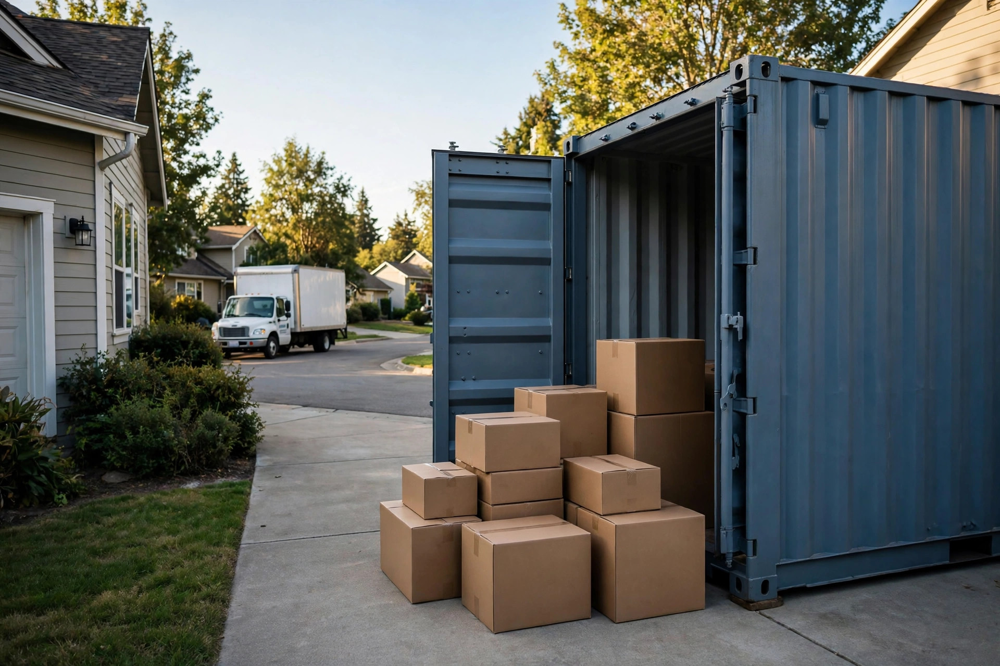

Portable Moving Containers vs. a Rental Truck in Canada: The Spec-and-Cost Check
The truck almost always wins on the day rate. The container wins the moment your move has a gap, a wait, or nobody willing to drive. Here is the comparison built from the providers' own published specs and prices.

Most container-versus-truck comparisons are written for the United States, priced in US dollars, and settled with a features table: who drives, who stores, who sets the schedule. Useful, but it skips the two questions that decide a Canadian move. First, how much does each option actually hold — in verified cubic feet and pounds, not in foot labels? Second, what does each one cost for a real Canadian route once the move stops being a single perfect day? This guide answers both from the companies' own pages, checked October 17, 2026.
The short answer: the truck wins the day, the container wins the gap
If your move is local, your dates line up, and you can load, drive, unload, and return in a day or two, a rental truck is the cheapest way to move your own household — the worked example below puts a two-day Toronto rental from about $250. If your move-out and move-in dates do not line up, if the new place needs work first, or if nobody in the household will drive a large truck, the container's monthly price buys you something the truck cannot sell at any day rate: time. The container sits in your driveway or at a storage facility while the calendar sorts itself out, and you load and unload it exactly once. PODS makes that model explicit: containers are rented monthly, and even a trip through a PODS Storage Center still means loading and unloading one time.
Specs verified: a 16-foot label is not a capacity
Containers and trucks are sold by length, but length is the least honest number on the page. What matters is interior volume and the weight limit — and the two do not rise together. A 16 ft PODS container holds 835 cubic feet but caps out at 4,200 lbs, while the smaller 8 ft is rated for 5,200 lbs. A steel 20 ft BigSteelBox holds 1,172 cubic feet and up to 15,000 lbs of contents — more volume than a 20 ft rental truck (1,016 cubic feet) and nearly three times the truck's 5,700 lb payload. At the small end, one U-Box holds 257 cubic feet and 2,000 lbs, about a room and a half; U-Haul itself notes it takes roughly 3.3 U-Boxes to equal one 16 ft PODS container's roughly 857 cubic feet.
| Option | Volume | Weight limit | Company's own positioning |
|---|---|---|---|
| U-Haul U-Box | 257 cu ft | 2,000 lbs | About 1.5 rooms per box |
| PODS 8 ft | 402 cu ft | 5,200 lbs | About 1 room |
| PODS 12 ft | 689 cu ft | 4,700 lbs | 2–3 rooms; mostly local moves only |
| PODS 16 ft | 835 cu ft | 4,200 lbs | 3–4 rooms |
| U-Haul truck 20 ft | 1,016 cu ft | 5,700 lbs | 2-bedroom home to 3-bedroom apartment |
| BigSteelBox 20 ft | 1,172 cu ft | 15,000 lbs | Typically furnished 2–4 bedroom home |
Two planning consequences follow. A book-heavy or workshop-heavy household can hit a container's weight limit while the box still looks half empty — the PODS 16 ft's 4,200 lbs is the tightest ceiling in the table relative to its size. And placement is a spec too: a 20 ft BigSteelBox needs 70 feet in a straight line for the tilt-deck delivery truck to set it down. BigSteelBox also notes PODS can be placed in tighter spaces because of its smaller sizes and lighter weight. Measure your driveway before you fall in love with the big steel box.
What each option actually charges for
The truck charges by the day and the distance. You pay a day rate, a per-kilometre rate on local rentals, and fuel — and the clock runs whether you are ready or not. A second load, a late return, or a move that slips a day all bill again.
The container charges by the month and the movements. PODS prices a local move as one package: delivery and pick-up at both homes plus 30 days of storage are inside its published local range. U-Box unbundles the same pieces — U-Haul's own guide lists container rental, delivery, pickup, shipping, transit, and storage as separate charges billed at different stages, with shipping billed five days before the container's scheduled arrival. BigSteelBox takes the opposite approach: the price quoted is the price paid, with extra charges only if you keep the box longer than planned or need a second one, and the same price applies up to the full 15,000 lbs.
One more line item both sides share: by default, belongings in a U-Box are not insured in transit or storage — coverage is an optional add-on. Whatever you choose, protection is a separate decision, not a bundled feature.
Worked example 1: a Toronto local move
BigSteelBox's Ontario cost page (published May 2024, checked October 17, 2026) works this exact comparison for a two- to three-room Toronto home. The 20 ft container, rented for a month and kept at your place, costs $474 before taxes — and that figure includes moving the loaded container to the new address and picking it up empty when you are done. The same page's rental-truck example runs a 20 ft U-Haul at $39.95 per day plus $1.09 per kilometre: a two-day move over about 30 km starts from about $250 plus taxes, before fuel.
So the truck is roughly $224 cheaper — if the move really is two days. Now add the gap case the day rate cannot handle: your new place is not ready for two weeks. With the container, nothing changes; the month you already paid covers it, or the loaded box waits at the Mississauga facility for $39 a month. With the truck, the load goes into a storage unit instead — a second unload, a second reload, and very likely a second truck rental to finish the move. The container's premium is not for the box. It is for never handling your furniture twice.
For a PODS comparison point, treat the published range as a floor with a warning label: pods.ca lists local container moves at $299 to $499 including delivery, pickup, and 30 days of storage — but PODS' own footnote says those averages rest on rates published in September 2019. Use the range to frame the conversation, then get a current quote.
Worked example 2: Toronto to Ottawa
Distance changes the ranking less than you would expect. On the same Ontario page, a 20 ft BigSteelBox move from Toronto to Ottawa starts at $1,890 plus taxes, including one month of rental and all movements. The U-Haul example for the same route is about $1,000 plus taxes for a 20 ft truck over two days, including 536 kilometres and a $200 fuel budget. Full-service movers on the route start around $2,000 and reach $3,000 to $4,000 for a two-bedroom home.
The truck still wins on price — by roughly $890 — but the terms of the win matter. The $1,000 assumes the two days go perfectly: loaded fast, driven, unloaded fast, returned on schedule. Every extra day is billed, and the driver is you, for a full highway day in a loaded 20 ft truck. The container's extra $890 buys the driving, a month of slack at both ends, and a fixed quote. Which of those is worth $890 depends on the household, not the spreadsheet — but now it is a priced decision instead of a guess.
The decision framework: five questions
- Do your dates line up? Same-day or next-day handover favours the truck. Any gap — a closing delay, a renovation, a lease that starts mid-month — favours the container, because storage is built into its price.
- Who drives? If nobody will take a large truck on the highway, the container (or movers) is the answer regardless of the day rate. If driving is fine, the truck's advantage is real.
- How heavy is the load, honestly? Check the weight column, not the length. Dense loads fit the steel box's 15,000 lbs; light, bulky loads fit anything.
- Can the container be placed? Driveway length, slope, street-parking rules, and condo or strata restrictions can veto a container before price matters. BigSteelBox warns that busy urban areas may require a parking permit for a truck or a container.
- Where do you live? PODS has 8 Canadian locations, all in major metropolitan areas; BigSteelBox lists 34 locations across BC, Alberta, Saskatchewan, Manitoba, and Ontario and is more likely to serve smaller communities, especially in Western Canada. Availability can make this decision for you.
Tip: U-Box removes the sizing gamble for small loads: you can order extra boxes and unused containers are fully refunded, so you pay only for the boxes you actually fill. For a studio or a partial household, that model can undercut both a half-empty large container and a truck day spent on one room of furniture.
What success looks like
You have chosen well when the option you booked matches the shape of your move, not just its size: the truck returns on time with no second-day charge because your dates truly lined up, or the container is picked up inside the month you paid for with every item handled exactly twice — once in, once out. You know your load's estimated volume and weight, both sit under the published limits of what you booked, and the total you paid is within a few dollars of the quote you compared — because you compared totals (days, kilometres, fuel, months, movements), not headline rates. If a quote only wins on its first line, it is not the cheaper option yet.
FAQ
Is a moving container cheaper than renting a truck in Canada?
For a same-day or two-day local move, usually not: the Toronto worked example prices the truck from about $250 against $474 for a month with a 20 ft container. The container becomes the cheaper plan when the alternative is a storage unit plus a second truck rental, or when its fixed quote replaces several billed extras.
How many U-Boxes do I need?
Each U-Box holds 257 cubic feet, about a room and a half. A one-bedroom household typically needs two to three; a three-bedroom home needs five or more, at which point a single large container or truck is usually simpler. Order generously — unused boxes are refunded.
Can a container sit on my street?
Possibly, with permission. Placement rules are municipal, and BigSteelBox notes that busy urban areas may require a parking permit for a container or moving truck. Confirm with your city and your landlord, condo, or strata before delivery day — a refused placement is the most expensive container outcome of all.